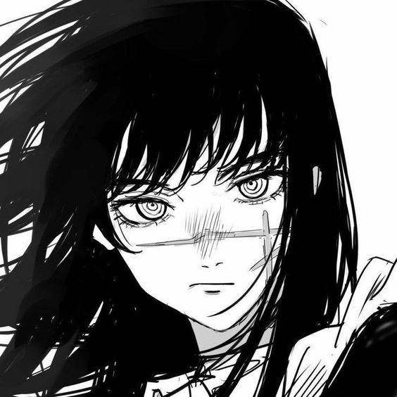
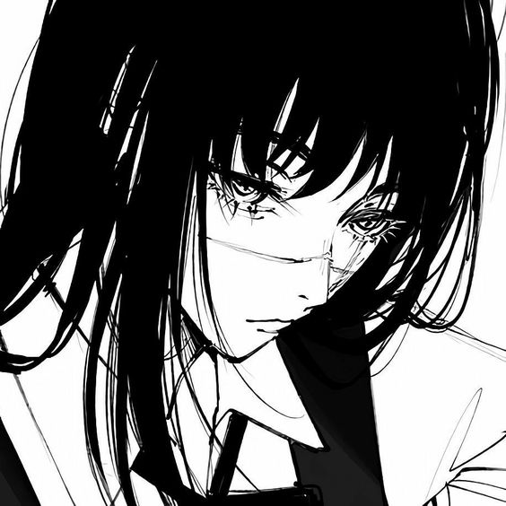
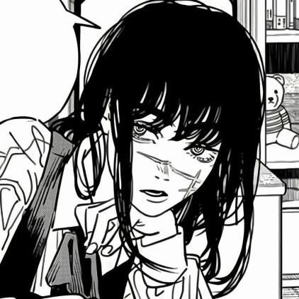

Sou o demônio da guerra e estou entediada, escolha alguem para eu matar de preferencia o Chainsaw Man
Uma estudante do ensino médio que não tem amigos, as únicas pessoas que sabem meu nome são a representante de turma e meu professor, o senhor Tanaka. Como sou muito solitária acabei não suportando as outras pessoas e sendo um tanto indiferente ao experimento que meu professor iniciou com a turma: levar um demônio para conviver com os alunos por 3 meses e depois ser morto por eles.
Tive meu rosto destroçado e acabei morrendo, mas antes do meu fim aceitei um pacto com o Demônio da Guerra… Isso mesmo, o demônio que também havia feito um pacto com Makima! Ela se vinga da representante e então começamos a entender o contexto social dessa nova fase.
  Criação de Armas: O Demônio da Guerra tem o poder de criar uma variedade de armas mortais usando seres humanos como material quase instantaneamente simplesmente tocando-os. Até agora, este demônio usou Medula Espinhal de um professor como uma Espada e também criou uma granada de mão usando um braço. Além disso, o War Devil tem os mesmos poderes de outros demônios, como a criação de contratos, posse do corpo, consumo de sangue e reviver.